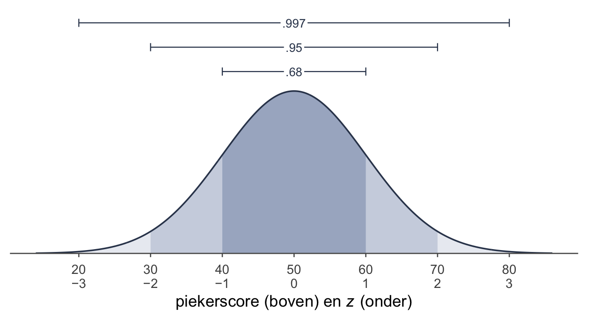
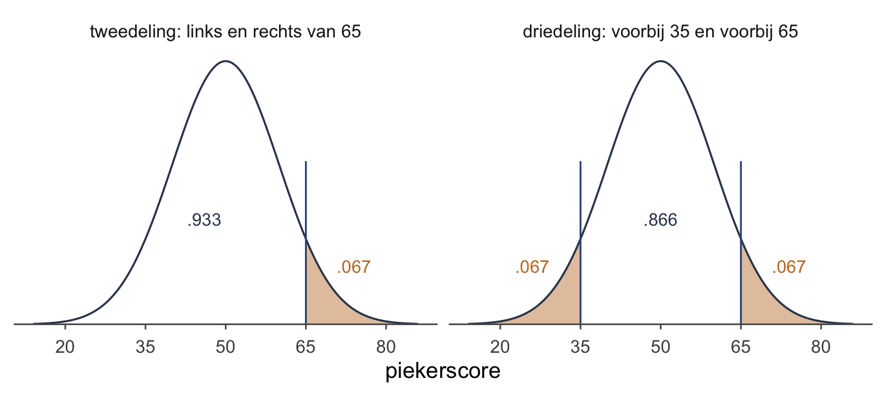
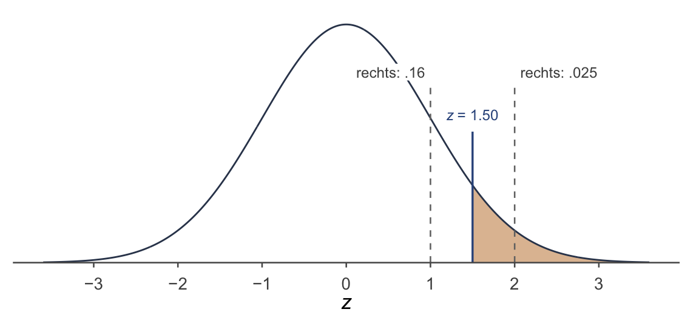
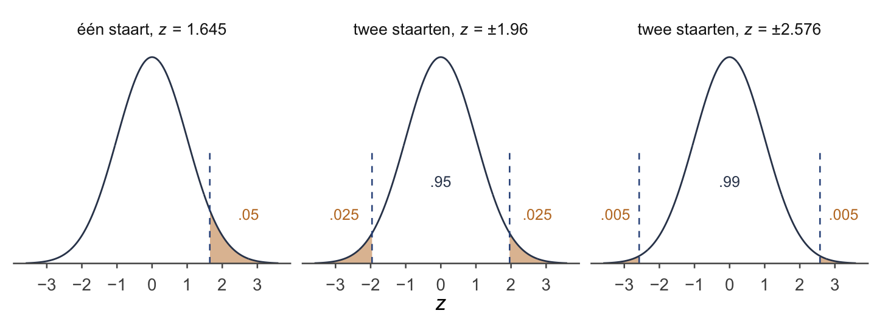

Week 0 · De normaalverdeling en z-scores
even terug — wat je eerder had, klaargezet voor week 1
Waarom een week 0
Toetsen staat op één ding: de normaalverdeling, en hoe je een score daarop plaatst met een z-score. Je hebt het eerder gehad. Weet je het niet meer precies, dan is deze bladzijde er precies voor: kort, en zo dat het aansluit op week 1 (Steekproevenverdelingen en hypothesetoetsing).
Eén ding vooraf: je hebt geen tabel nodig. Met de hand werk je met een vuistregel en drie getallen die je uit je hoofd kent; precies wordt het met pnorm() in R.
Ruw is ruk
Iemand scoort 65 op een piekervragenlijst. Is dat veel?
Je hebt geen idee. 65 wát? Als je niet weet waar het midden ligt, en niet hoe ver de scores uit elkaar liggen, zegt 65 helemaal niks. Ruw is ruk: een ruwe score, los van zijn groep, is een getal zonder betekenis.
Dus de groep erbij. In de algemene bevolking zijn de scores op deze vragenlijst normaal verdeeld, met gemiddelde μ = 50 en standaarddeviatie σ = 10. (In week 1 kom je dezelfde vragenlijst weer tegen.) Nu kun je er iets mee.
De klok: oppervlakte is kans
De normaalverdeling is een gladde, symmetrische klok. Welke klok je hebt, hangt af van twee getallen:
- het gemiddelde μ zegt waar het midden ligt;
- de standaarddeviatie σ zegt hoe breed de klok is.
Kort opgeschreven: . Je leest het als: “X is normaal verdeeld met gemiddelde μ en standaarddeviatie σ”. De piekervragenlijst is .
Let op: soms krijg je niet de standaarddeviatie maar de variantie σ², het kwadraat ervan. Neem dan eerst de wortel. Variantie 100 betekent .
Aan zo’n klok lees je geen aantallen af maar oppervlakte. De hele oppervlakte tussen de as en de klok is 1. Op de as staat de gebeurtenis: een score. Erboven, tussen de as en de klok, staat de kans: het stuk oppervlakte boven dat deel van de as. Dat is de kans dat een willekeurig gekozen persoon daar scoort.
De 68–95–99.7-regel
Elke normaalverdeling heeft dezelfde vorm. Meet je af in standaarddeviaties vanaf het midden, dan ligt er dus altijd evenveel oppervlakte op dezelfde plek:
- binnen één standaarddeviatie van het midden ligt ongeveer .68;
- binnen twee standaarddeviaties ongeveer .95;
- binnen drie standaarddeviaties ongeveer .997.
Van de 100 mensen scoren er dus ongeveer 68 tussen 40 en 60 op de piekervragenlijst, en ongeveer 95 tussen 30 en 70.
Waarom niet 1? Omdat de staarten oneindig ver doorlopen. Ze worden alleen heel dun.
Uit de regel volgen de staarten. Wat niet binnen de grenzen ligt, ligt erbuiten, de helft links en de helft rechts:
Rechts van één standaarddeviatie boven het midden ligt dus ongeveer .16, rechts van twee ongeveer .025, rechts van drie ongeveer .0015. Hoe verder weg, hoe kleiner de staart. Op een intelligentietest geldt dus: Einstein heeft de kleinste staart, omdat hij het verst weg zit.
De z-score: hoe vaak past het lineaaltje?
Een z-score is een telling: het aantal standaarddeviaties tussen een score en het gemiddelde, met een min ervoor als de score onder het gemiddelde ligt. Meer is het niet. Gestandaardiseerd klinkt als een definitie, maar zegt niets: een belastingformulier is ook gestandaardiseerd.
Zie de standaarddeviatie als een lineaaltje van 10 piekerpunten. De z-score is de vraag: hoe vaak past dat lineaaltje tussen het midden en deze score?
Voor de score van 65:
Anderhalf lineaaltje boven het midden. Dat zegt al meer dan 65.
En terug. Van z naar de score is fietsen: begin bij huis (het midden), en leg het lineaaltje z keer neer.
Lees als anderhalf keer een lineaaltje van 10. Een formule omvormen hoeft nooit: je loopt gewoon vanaf het midden.
Je komt z ook tegen als z-waarde. Bij het toetsen heet hij meestal zo. Dan doe je dezelfde deling, maar meet je niet hoe ver één persoon van het midden ligt: je meet hoe ver het gemiddelde van een steekproef ervan ligt.
Van z naar een kans
Ook z-scores zijn eigenlijk nog ruk. Pas een kans zegt echt iets: “maar ongeveer 7 van de 100 mensen piekeren meer dan ik” begrijpt iedereen.
Regel 1: eerst tekenen
Voor je één getal uitrekent: schets een klok, zet het midden erin, zet je score op de as, en arceer het stuk dat je zoekt. Mooi hoeft niet; de richting moet kloppen. Twee soorten stukken:
- een tweedeling: één grens, een stuk links en een stuk rechts. Die hoort bij lager dan of hoger dan, en je kijkt naar één staart;
- een driedeling: twee grenzen, even ver van het midden. Die hoort bij minstens zo ver van het midden, aan welke kant ook, en je kijkt naar twee staarten samen.

Met de hand: de regel geeft een gebied
ligt tussen één en twee lineaaltjes. Rechts van ligt ongeveer .16, rechts van ongeveer .025. De staart rechts van 1.50 zit daar dus tussenin: kleiner dan .16, groter dan .025.

Precies is dat niet, maar vaak is het genoeg: bij een meerkeuzevraag valt er meestal maar één optie in dat gebied.
Precies: pnorm()
pnorm() geeft de oppervlakte links van een z. Wil je rechts, dan zet je lower.tail = FALSE erbij.
# links van z = 1.5: de grote kant van de tweedeling
pnorm(1.5)[1] 0.9331928# rechts ervan: de kleine kant
pnorm(1.5, lower.tail = FALSE)[1] 0.0668072Links .933, rechts .067. Die twee tellen op tot 1, want samen zijn ze de hele klok. Inderdaad tussen .025 en .16: ongeveer 7 van de 100 mensen piekeren meer dan 65.
Geef je pnorm() alleen een z, dan rekent hij in de klok van z zelf: gemiddelde 0, standaarddeviatie 1. Die klok heet de standaardnormaalverdeling, . Hoe je R in de schaal van je eigen vragenlijst laat rekenen, staat in In R: kansen uit de klok.
De driedeling. Hoeveel mensen scoren minstens zo ver van 50 als 65, aan welke kant ook? Even ver aan de andere kant is 35, bij z = −1.50. De klok is symmetrisch, dus de staart links van 35 is precies even groot als die rechts van 65. Twee staarten samen, dus één staart maal twee:
# twee staarten: de rechterstaart, maal twee
2 * pnorm(1.5, lower.tail = FALSE)[1] 0.1336144# of de linkerstaart van -1.5, maal twee: hetzelfde
2 * pnorm(-1.5)[1] 0.1336144Dat maal twee mag hier, omdat een gladde klok aan beide kanten precies even groot is. Een stippenplot, zoals in week 1, lijkt op zo’n klok, maar is nooit precies symmetrisch; daar tel je beide kanten echt.
De drie ankers
Drie waarden van z komen zo vaak terug dat je ze uit je hoofd kent:
| z | rechts ervan (één staart) | buiten ±z (twee staarten samen) | tussen −z en z |
|---|---|---|---|
| 1.645 | .05 | .10 | .90 |
| 1.96 | .025 | .05 | .95 |
| 2.576 | .005 | .01 | .99 |

1.96 is de heilige z-waarde. Volgens de vuistregel ligt .95 binnen twee lineaaltjes; preciezer is het binnen 1.96. Bij 1.96 ligt er .025 in elke staart, samen .05.
1.645 is de andere heilige z-waarde, en die wordt vaak met de eerste verward. Bij 1.645 ligt er .05 in één staart. Teken het, dan zie je het.
Redeneren met de ankers. Elke z kun je tussen de ankers leggen. Kijk wel eerst naar je tekening: één staart of twee?
- Eén staart. Onze ligt onder 1.645, dus rechts ervan ligt méér dan .05. Klopt, het is precies .067 met
pnorm(). - Twee staarten samen. Een z van 2.40 ligt tussen 1.96 en 2.576. Verder dan 1.96, dus samen minder dan .05. Niet zo ver als 2.576, dus samen meer dan .01.
Je hebt geen exact getal, maar wel genoeg om te beslissen.
Terug: van een kans naar een score
Nu andersom. Wat gegeven is, bepaalt de richting. Krijg je een score en zoek je een kans, dan ga je score → z → kans. Krijg je een kans en zoek je een score, dan ga je kans → z → score.
Boven welke piekerscore zitten de 5 van de 100 hoogste piekeraars?
- Teken. Eén staart rechts, van .05: een tweedeling.
- Zoek de z. Rechts van 1.645 ligt .05: het eerste anker.
- Fiets terug. .
Wie hoger scoort dan 66.45, hoort bij die 5 van de 100.
qnorm() doet hetzelfde in één keer: je geeft een oppervlakte links, R geeft de z (of de score) die erbij hoort.
# welke z heeft .95 links van zich (en dus .05 rechts)?
qnorm(0.95)[1] 1.644854# en meteen als piekerscore
qnorm(0.95, mean = 50, sd = 10)[1] 66.44854Zo komen de ankers ook uit R: qnorm(0.975) geeft afgerond 1.96, en qnorm(0.995) geeft afgerond 2.576.
In R: kansen uit de klok
Twee functies, en ze zijn elkaars omgekeerde:
pnorm()krijgt een plek op de as en geeft een oppervlakte (links, tenzijlower.tail = FALSE);qnorm()krijgt een oppervlakte (links) en geeft een plek op de as.
Geef je ze alleen een z of een oppervlakte, dan rekenen ze in de klok van z. Geef je mean en sd mee, dan rekenen ze in de schaal zelf, en hoef je z niet eerst uit te rekenen:
# hoger dan 65 op de piekervragenlijst: in één keer
pnorm(65, mean = 50, sd = 10, lower.tail = FALSE)[1] 0.0668072Hetzelfde getal als via . Een veelgemaakte fout is beide tegelijk doen: pnorm(1.5, mean = 50, sd = 10). Dan vraag je R naar een piekerscore van 1.5, en krijg je een getal vlak bij 0.
Een hele kolom tegelijk. De oefendataset slaapstudie gaat het hele boek mee: 30 slechte slapers, met onder meer hun piekerscore vóór een slaaptraining (piekeren_voor). Download slaapstudie.RData en zet het in je projectmap. (Nog geen project? In RStudio: File > New Project…, dan New Directory > New Project. De map die je daar kiest, is je projectmap.) Daarna:
## Inladen ----
load("slaapstudie.RData")Zo zet je die hele kolom om in z-scores ten opzichte van de algemene bevolking. Twee tekens die je daarvoor nodig hebt:
slaapstudie$piekeren_voorpakt één kolom uit de tabel, bij zijn naam;<-bewaart wat rechts staat onder de naam links, hier als nieuwe kolomz_voor.
# z per persoon: (score - 50) / 10
slaapstudie$z_voor <- (slaapstudie$piekeren_voor - 50) / 10
# de eerste zes rijen, met de nieuwe kolom
head(slaapstudie) id groep leeftijd piekeren_voor piekeren_na z_voor
1 1 training 19 54 51 0.4
2 2 controle 24 49 45 -0.1
3 3 training 19 48 47 -0.2
4 4 training 26 54 55 0.4
5 5 controle 34 61 58 1.1
6 6 controle 21 54 56 0.4Reken de eerste rij na: . In opgave 0.6 ga je met die kolom verder.
Op naar week 1
Tot nu toe zet je één score af tegen een groep, en het lineaaltje is de standaarddeviatie σ. Hier was μ het gemiddelde van de algemene bevolking, en dat was bekend: 50.
In week 1 draait het om. De populatie is dan alle slechte slapers, en hún μ ken je niet: dat is juist de vraag. En één stip is daar geen persoon meer, maar het gemiddelde van een hele steekproef. Zulke gemiddelden liggen veel dichter bij het midden dan losse scores: het lineaaltje wordt korter.
De wandeling blijft precies dezelfde: score, z, kans, en terug. In week 1 tel je die gemiddelden als stippen. Hoeveel korter het lineaaltje is, en waarom de stippen een klok vormen, werk je uit in week 2 (Hypothesetoetsen voor één gemiddelde).
Oefenen
Tentamenblok
Zo kun je het op een tentamen tegenkomen: meerkeuze met vier opties. Een kans die je niet uit je hoofd kunt weten, staat in de vraag; anders redeneer je met de regel of de ankers.
Op je spiekbriefje
Mag je een eigen A4 meenemen, dan hoort dit erop:
- , en terug: ; staat er een variantie, neem dan eerst de wortel;
- de regel: binnen 1, 2 en 3 lineaaltjes ongeveer .68, .95 en .997; voorbij aan één kant ongeveer .16, .025 en .0015;
- de ankers: 1.645 (één staart .05), 1.96 (twee staarten samen .05), 2.576 (twee staarten samen .01);
- eerst tekenen: tweedeling (één staart) of driedeling (twee staarten samen)?
pnorm()geeft een oppervlakte, links tenzijlower.tail = FALSE;- twee staarten in R: is z negatief, dan
2 * pnorm(z); is z positief, dan2 * pnorm(z, lower.tail = FALSE); qnorm()wil een oppervlakte links en geeft een plek op de as.